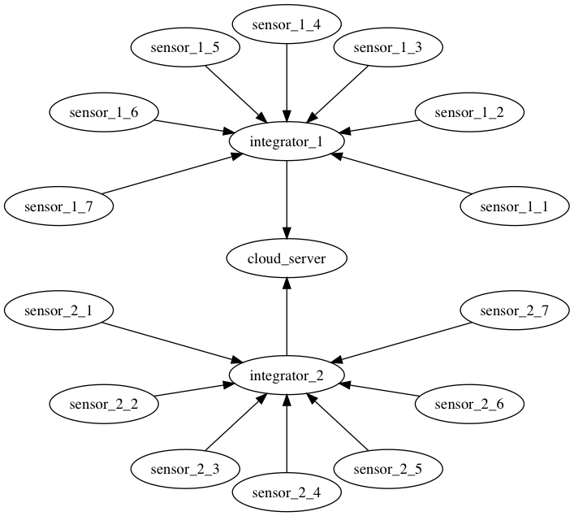
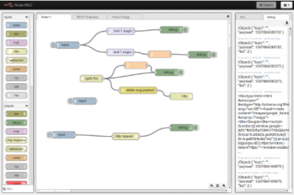

Privacy-Preserving Stream Integration


Introduction
This software is a set of Node-RED nodes which provides a privacy preserving stream integration algorithm. There are several sensors in several places and you want to integrate data from such sensors in a cloud server; but you, at the same time, need to consider privacy of those sensor data.
For example, you put sensors in each room of customers’ houses and want to get power usage of each room in order to analyze usage patterns and provide a useful service such as consulting to reduce electric bill. However, collecting power usage can reveal customers’ private life style; you thereby have to treat that information privately.
This software provides a solution for that situation. It assumes two integration steps: at first integrating sensor data in a trusted network before sending to a cloud server, then integrating sensor data in the cloud server.
The following figure shows an example of this situation: there are two trusted networks, each of them has seven sensors and one integrator, and a cloud server receives data from those two integrators.

In this software, those integrators and the cloud server run a Node-RED server. In each integrator, the Node-RED server has nodes receiving data from sensors, applying privacy protection to those data, and sending them to the cloud server. In the cloud server, the Node-RED server has nodes receiving data from integrators and merging data.
See Node-RED nodes page for information about each node.
About Node-RED
Node-RED is a visual tool for wiring the Internet of Things. You can design data flow using its graphical flow editor, and deploy your application handling data from several sources.

Visit its web site to know usage of the flow editor and the way to deploy your application on Node-RED.
Quick Start
There are two ways to start a Node-RED server which includes Node-RED nodes provided by this software: compiling source code on your computer and run, and using a docker container.
Build and Run by Node.js
Prepare Node.js, Python 3, and pip; then install dependencies and build:
# Install packages used to build.
$ npm install --only=dev
# Build related packages.
$ npm run build
# Install dependencies.
$ npm install --only=prod
after that, you can run Node-RED including privacy preserving algorithms:
$ npm start
Open http://127.0.0.1:1880/ with your web browser to access Node-RED’s flow editor.
Run in a docker container
A Docker image, jkawamoto/psi-node-red, is published in Docker Hub, to run Node-RED in a container.
To start a Node-RED service listening port 1880, run
$ docker run -d --name node-red -p 1880:1880 jkawamoto/psi-node-red
After Node-RED starts, open http://127.0.0.1:1880/ with your web browser to access Node-RED’s flow editor.
You can also build the image, jkawamoto/psi-node-red, by your self:
$ docker build -t psi-node-red -f dockerfile/node-red/Dockerfile .
Publications
The algorithm this software provides is based on two papers:
- Vibhor Rastogi and Suman Nath in “Differentially Private Aggregation of Distributed Time-Series with Transformation and Encryption,” published in SIGMOD 2010,
- Junpei Kawamoto, “An Implementation of Privacy Preserving Stream Integration System,” published in ICOIN 2016.
Please consider to site those papers if you will publish articles using this application.
License
This software is released under the GNU General Public License version 3, see LICENSE.